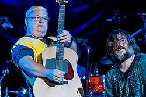

Tenacious D
Tenacious D is an American comedy rock duo, formed in Los Angeles, California in 1994. It was founded by actors Jack Black and Kyle Gass, who were part of The Actors' Gang theatre company at the time. The duo's name is derived from "tenacious defense" - a phrase used by NBA basketball sportscaster Marv Albert.